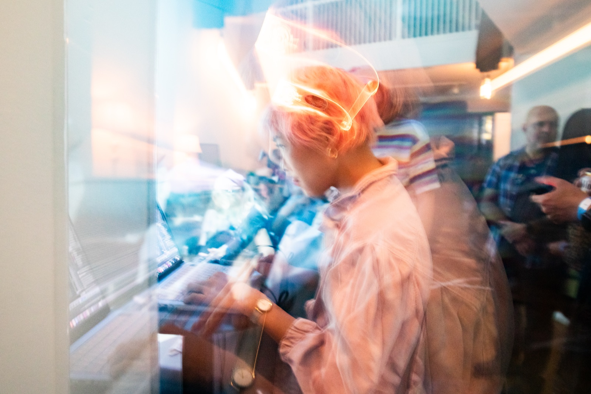

Nanae Itoi is a Japanese mixed-media artist based in New York City. Her practice combines sumi-e painting and sculptural forms with live performance and digital media, incorporating technologies such as projection mapping, motion capture, and hand and body tracking. Working across installation and interactive systems, she creates spatial experiences that integrate physical materials, human presence, and real-time visual environments.
I create interactive works that merge physical materials—sumi-e painting, sculpture, and the human body—with technologies such as motion capture and projection mapping. Performers, including dancers and musicians, become part of the work, blurring the boundary between object and presence.
My practice explores how to visualize the invisible—thoughts, emotions, and internal states—and translate them into shared experiences. Through interactivity, I emphasize the importance of being present in the same space, where audiences actively participate in shaping the work and forming connections with one another.
